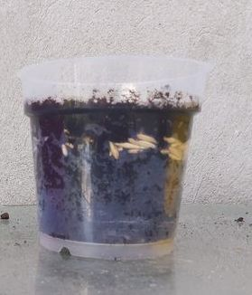
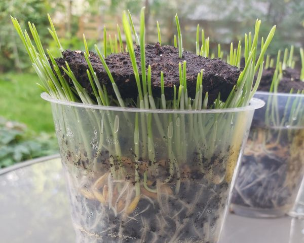
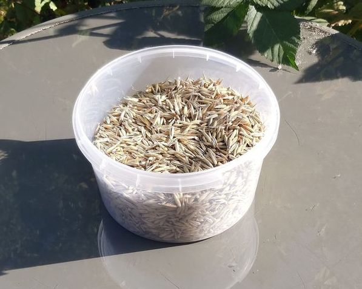
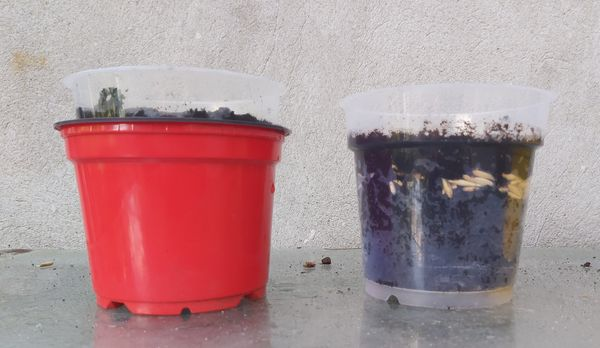
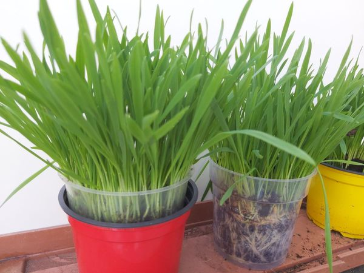
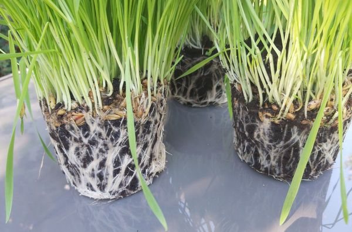
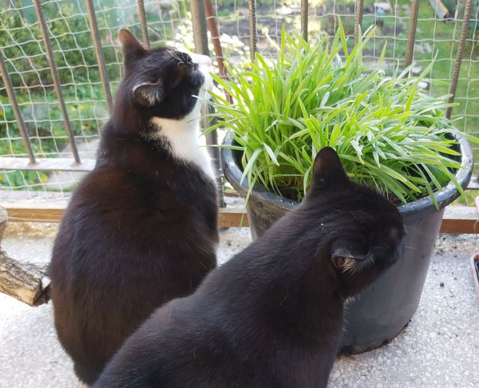
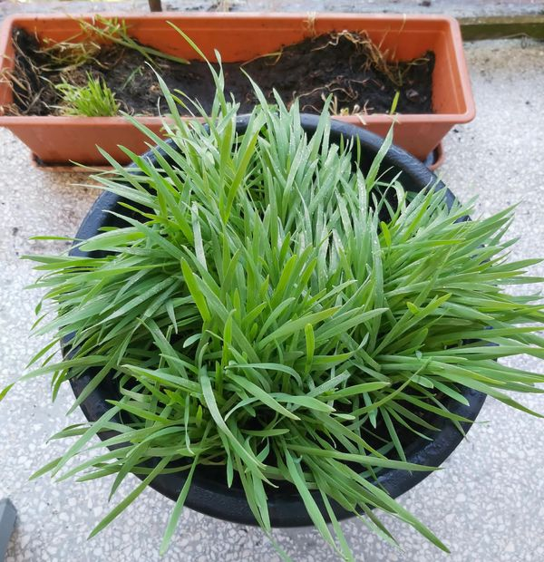

Projekty / Owies w doniczkach 2026


Owies w doniczkach
Trzy doniczki, ziemia, owies i kilka tygodni czekania. Bez laboratorium i specjalistycznego sprzętu.
Chcieliśmy sprawdzić, czy sposób uprawy i dostęp światła w okolicy korzeni będą widoczne podczas wzrostu owsa. Przygotowaliśmy trzy doniczki: przezroczystą, przezroczystą w czerwonej osłonce oraz żółtą, pełniącą rolę kontroli.
Rośliny rosły, korzenie wypełniły doniczki, a na końcu
przyszedł czas na porównanie.
Karta eksperymentu do wydruku:
📂 dokumenty/karta-obserwacji-owies.pdf
1. 15 września — Zaczynamy

Przygotowaliśmy dwie przezroczyste doniczki o pojemności około 0,45 litra i jedną podobnej wielkości doniczkę nieprzezroczystą. Do każdej nasypaliśmy ziemię do mniej więcej trzech piątych wysokości.
Nasion owsa nie żałowaliśmy. Wysialiśmy ich tyle, że przykryły niemal całą powierzchnię ziemi. Z perspektywy czasu można powiedzieć, że z zagęszczeniem trochę przesadziliśmy.
2. 20 września — I nic

Kilka dni minęło, a w doniczkach nadal głównie czarna ziemia. Na zdjęciu niewiele się dzieje. To również część doświadczenia: nie wszystko, co ważne, widać od razu.
3. 29 września — Ziemia zaczyna się podnosić
W końcu coś się dzieje. Owies kiełkuje i zaczyna podnosić ziemię. W przezroczystej doniczce dobrze widać, jak korzenie rozrastają się przy ściankach i docierają w stronę dna.
Przezroczysta doniczka daje nam dodatkowy podgląd na to, co zwykle pozostaje ukryte pod powierzchnią ziemi.
4. 8 października — Zielona dżungla

Po kilku tygodniach doniczki wypełnia wysoki, gęsty owies. Rośliny mają około 12–15 cm wysokości. Na zdjęciu widzimy wariant przezroczysty, wariant z czerwoną osłonką oraz żółtą doniczkę kontrolną.
Wysialiśmy dużo nasion i teraz dobrze to widać. Zielona gęstwina niemal całkowicie zasłania podłoże.
5. 8 października — Sprawdzamy korzenie

To właściwie koniec części obserwacyjnej. Wyjęliśmy rośliny z doniczek i porównaliśmy ich systemy korzeniowe. Korzeni było bardzo dużo — utworzyły gęstą sieć.
Czy zauważyliśmy wyraźne różnice między wariantami? Nie. Wizualnie korzenie wyglądały podobnie.
Co właściwie sprawdziliśmy?
Porównaliśmy wygląd korzeni po zakończeniu uprawy. Nie prowadziliśmy pomiarów ich długości ani masy. Dlatego możemy powiedzieć, że nie zauważyliśmy różnic wizualnych, ale nie możemy wykluczyć mniejszych różnic, których nie mierzyliśmy.
6. 8 października — Drugie życie owsa

Eksperyment w małych doniczkach dobiegł końca, ale owies nie musiał trafić do kosza. Przesadziliśmy go do donicy o pojemności 20 litrów i wystawiliśmy na balkon.
Pojawili się też testerzy jakości. Dwa koty szybko zainteresowały się nową zielenią.
7. Finał — Kontrola jakości zakończona

Na ostatnim zdjęciu owsa już nie ma. Ziemia została przekopana, a zawartość donicy przeszła dodatkowy test. Wygląda na to, że przynajmniej pod względem smakowym eksperyment zakończył się powodzeniem.
Co nam zostało z tego doświadczenia?
- Owies szybko stworzył gęstą zieloną powierzchnię.
- Przezroczysta doniczka pozwoliła obserwować korzenie bez wyjmowania roślin.
- Po wyjęciu roślin nie zauważyliśmy wyraźnych różnic wizualnych między korzeniami.
- Nie wszystko zmierzyliśmy, więc nie na każde pytanie mamy odpowiedź.
- Rośliny dostały drugie życie — choć koty miały własny plan na zakończenie eksperymentu.
Nie każde doświadczenie kończy się odkryciem wielkiej różnicy. Czasem ważne jest również to, co sprawdziliśmy, czego nie zauważyliśmy i co następnym razem warto zmierzyć.
To jeden z przykładów doświadczeń, które można przeprowadzić z prostymi materiałami i uważnie obserwować ich przebieg.